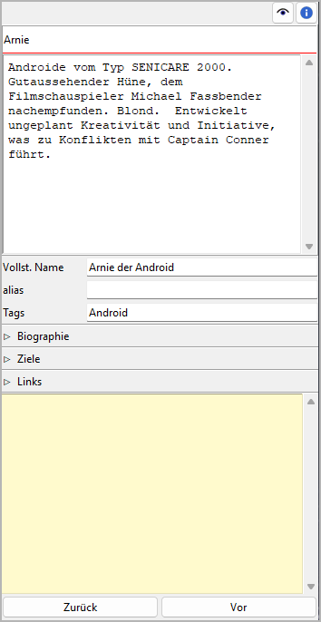
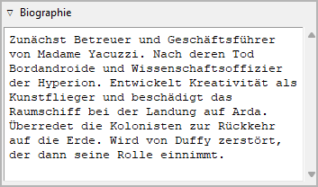
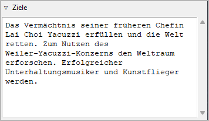
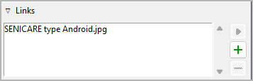

Figureneigenschaften
The Figur properties view opens in the right pane when you select a character in the tree.

Titel und Beschreibung
Titel und Beschreibung are displayed in an editable „Karteikarte“.
The editing of the Titel can be completed by pressing the Enter key.
Changes to the description are applied when the mouse is clicked
anywhere outside the text input field.
Vollst. Name
The character’s Titel as shown on the Karteikarte is used as
a short name at several places. The full name can be entered
separately. Editing can be completed by pressing the Enter key.
alias
This entry field is for alias names. Editing can be completed
by pressing the Enter key.
Biographie
Aufklappen or collapse this frame by clicking on the label.

- Birth/death date
Format: YYYY-MM-DD, according to ISO 8601.
The editing of the birth and death dates can be completed by pressing the
Enter key. Changes to the bio are applied when the mouse is
clicked anywhere outside the text input field.
Ziele
Aufklappen or collapse this frame by clicking on the label.

Changes to the goals are applied when the mouse is clicked anywhere outside the text input field.
Hinweis
This text box can hold any character data that seem important to you. If „Ziele“ is not the right category for you, you can change the label in the book settings.
Links
Aufklappen or collapse this frame by clicking on the label.

This is a list for image and research document links.
Although novelibre holds some character/location/item data, it is not the right application for extensive world building. For this, you may want to use more powerful software, like Zim Desktop Wiki. In this case, novelibre allows you to create links to the text files that will take you quickly to the right places in the wiki.
Or you have collected some images that could inspire you when writing. Then simply create links to these images to open them with your system’s standard image viewer.
Tipp
If you have collected several images for a character in a folder that your standard image viewer can browse through, a single link to any image file is sufficient.
The links are displayed in a list in the order they are entered.
- Link hinzufügen
When clicking on
 , a file selection dialog opens. The selected
file will be added to the link list.
, a file selection dialog opens. The selected
file will be added to the link list.Hinweis
By default, the dialog shows image files. For other file types, change the selector in the lower right corner.

Windows 10 Explorer screenshot
- Link entfernen
When clicking on
 or pressing the
or pressing the Delkey, the selected link is removed from the list.- Link öffnen
When double-clicking on a link, or clicking on
 ,
the link is opened with the standard application for the link’s file type.
,
the link is opened with the standard application for the link’s file type.Hinweis
If you want to open certain linked files with another application than the standard application, you can provide a novelibre „launcher“ setting. For this, just create a text file named launchers.ini in the
.novelibre.configdirectory (where all configuration files are stored).This example shows a setting that makes novelibre open text files with the Zim Desktop Wiki application instead of the standard text editor:
[SETTINGS] .txt = C:/Program Dateis (x86)/Zim Desktop Wiki/zim.exe

Windows 10 Explorer screenshot
„Haftmerker“
The yellow text area is for notes. Changes are applied when the mouse is clicked anywhere outside the text input field.
When the „sticky note“ of a character contains text, an „N“ is displayed in the Baumansicht as a reminder.
Bemerkung
The „sticky notes“ are only for working with novelibre. They are not meant to be exported into a document. However, they appear in the character list.